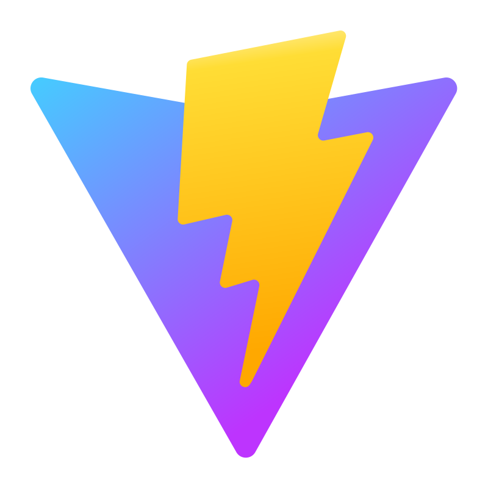
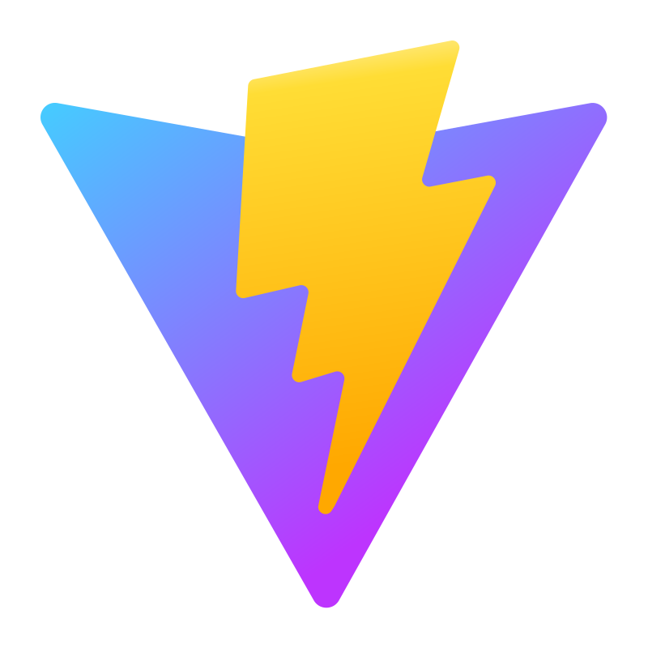

Perfil
Samuel Figueroa
Desarrollador Frontend
Oriundo de Mendoza, Argentina. A mediados del año 2022, reviví mi sueño de niño: aportar mi grano de arena en el mundo de la tecnología. Decidí comenzar por el fascinante mundo de la programación y el desarrollo web. ¡Me maravillaba ver el arte plasmado en la Web! Supe que quería ser parte de ello. Así que aquí estoy, ¡Colaborando en este vasto e infinito universo digital!
Durante más de un año, he acumulado conocimientos y habilidades, enfrentando desafíos complejos y entregando resultados de calidad. Tengo experiencia trabajando tanto en proyectos individuales como en equipo, donde utilizamos un marco de trabajo como Scrum, actualmente me encuentro aprendiendo una metodología agile, Kanban.
Me apasiona el frontend y quiero especializarme en esta área, aunque también me interesa explorar otras disciplinas del desarrollo web. Mantengo un equilibrio saludable en mi aprendizaje para evitar el burnout y siempre busco mantenerme al día con las últimas tendencias y avances en tecnología.
Ser parte de la comunidad de desarrolladores y ver mi trabajo en acción es una de las mayores recompensas para mí. ¡Estoy emocionado por seguir aprendiendo, creciendo y aportando a este increíble Universo Tecnológico!


 
